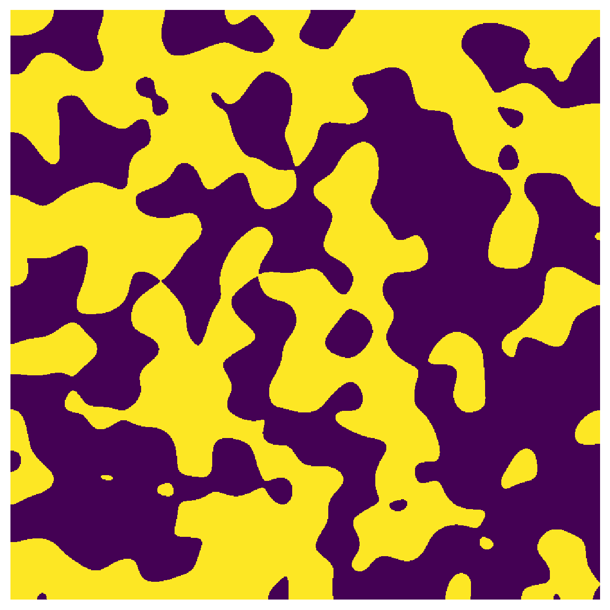
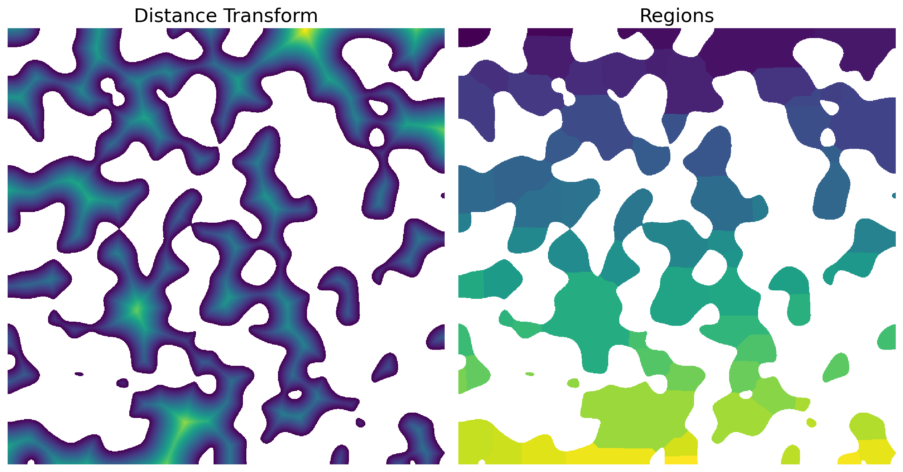

snow_partitioning_parallel#
Similar to snow_partitioning except that it performs SNOW algorithm in parallel and serial mode to save computational time and memory requirement respectively.
Import packages#
import numpy as np
import porespy as ps
from porespy.tools import randomize_colors
import matplotlib.pyplot as plt
import matplotlib.gridspec as gridspec
import time
ps.visualization.set_mpl_style()
np.random.seed(10)
/opt/hostedtoolcache/Python/3.8.17/x64/lib/python3.8/site-packages/openpnm/algorithms/_invasion_percolation.py:358: NumbaDeprecationWarning: The 'nopython' keyword argument was not supplied to the 'numba.jit' decorator. The implicit default value for this argument is currently False, but it will be changed to True in Numba 0.59.0. See https://numba.readthedocs.io/en/stable/reference/deprecation.html#deprecation-of-object-mode-fall-back-behaviour-when-using-jit for details.
def _find_trapped_pores(inv_seq, indices, indptr, outlets): # pragma: no cover
im#
Works on 2D and 3D images. We use 2D here because it is easier to visualize.
im = ps.generators.blobs(shape=[800, 800])
plt.figure(figsize=[6, 6])
plt.axis(False)
plt.imshow(im);

overlap, divs, and cores#
cores is the number of cores to use. The more cores the faster the snow_partitioning performs. If overlap is None it is estimated using porespy.tools.estimate_overlap method. The domain is divided by 2 in each direction as supplied to divs.
start = time.time()
x1 = ps.filters.snow_partitioning_parallel(im, r_max=5, sigma=0.4, divs=2, overlap=None, cores=1)
pause = time.time()
x2 = ps.filters.snow_partitioning_parallel(im, r_max=5, sigma=0.4, divs=2, overlap=None, cores=4)
stop = time.time()
print('OPERATION TIME:')
print('cores=1:', pause-start, 'seconds')
print('cores=4:', stop-pause, 'seconds')
OPERATION TIME:
cores=1: 4.198875665664673 seconds
cores=4: 0.608940839767456 seconds
The snow algorithm returns several images
print(x1)
――――――――――――――――――――――――――――――――――――――――――――――――――――――――――――――――――――――――――――――
Results of snow_partitioning_parallel generated at Mon Jul 10 15:15:20 2023
――――――――――――――――――――――――――――――――――――――――――――――――――――――――――――――――――――――――――――――
im Array of size (800, 800)
dt Array of size (800, 800)
regions Array of size (800, 800)
――――――――――――――――――――――――――――――――――――――――――――――――――――――――――――――――――――――――――――――
Plot the results
fix, ax = plt.subplots(1, 2, figsize=[12, 12])
ax[0].axis(False)
ax[0].imshow(x1.dt/im)
ax[0].set_title('Distance Transform', fontdict={'fontsize': 18});
ax[1].axis(False)
ax[1].imshow(x1.regions/im);
ax[1].set_title('Regions', fontdict={'fontsize': 18});
